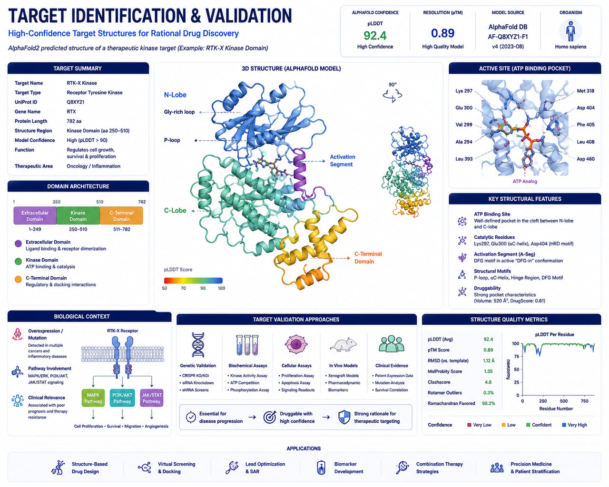

AI-Assisted Bioinformatics
Machine learning-enabled workflows for biomarker discovery, variant prioritization, and predictive genomics.
AI-Powered Multi-Omics Target Discovery, Structural Biology & Druggability Assessment

RASA Life Science Informatics provides advanced Target Identification & Structure-Based Design services that integrate multi-omics analytics, systems biology, structural bioinformatics, and artificial intelligence to accelerate early-stage drug discovery.
Our platform combines genomics, transcriptomics, proteomics, network biology, machine learning, and protein structure modeling to identify, prioritize, and characterize high-confidence therapeutic targets across oncology, neuroscience, infectious diseases, autoimmune disorders, metabolic diseases, and rare disorders.
Using industry-leading technologies such as AlphaFold, STRING, Reactome, Open Targets, DisGeNET, and DrugBank, we evaluate targets based on biological relevance, disease association, pathway involvement, structural tractability, and druggability potential. These insights support downstream applications including molecular docking, virtual screening, molecular dynamics simulations, and structure-based drug design.
Machine learning-enabled workflows for biomarker discovery, variant prioritization, and predictive genomics.
Support for Illumina, Oxford Nanopore, PacBio HiFi, and 10x Genomics platforms.
From raw sequencing data to biological interpretation and publication-ready reports.
Deployable on AWS, Google Cloud, HPC clusters, and secure on-premise environments.
Built using Nextflow, Snakemake, Docker, and Singularity for enterprise-grade bioinformatics operations.
Get in touch with our team in Pune, India to discuss sample sizes, platform details, and custom bioinformatics pipeline configurations for your research program.
Start a Project